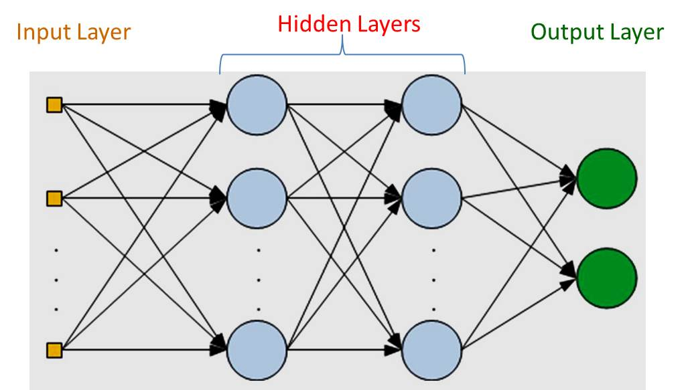
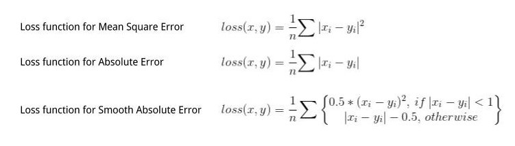

A multilayer perceptron (MLP) is a deep, artificial neural network.
It is composed of more than one perceptron.
They are composed of an input layer to receive the signal, an output layer that makes a decision or prediction about the input,
and in between those two, an arbitrary number of hidden layers that are the true computational engine of the MLP.
MLPs with one hidden layer are capable of approximating any continuous function.

Multilayer perceptrons are often applied to supervised learning problems:
they train on a set of input-output pairs and learn to model the correlation (or dependencies) between those inputs and outputs.
Training involves adjusting the parameters, or the weights and biases, of the model in order to minimize error.
Backpropagation is used to make those weigh and bias adjustments relative to the error, and the error itself can be measured in a variety of ways, including by root mean squared error (RMSE).
2. Loss Calculation
When we pass the data instance(or one example) we will get some output from the model that is called Predicted output(pred_out)
and we have the label with the data that is real output or expected output(Expect_out).
Based upon these both we calculate the loss that we have to backpropagate(using Backpropagation algorithm).
There is various Loss Function that we use based on our output and requirement.

3. Backward Pass
After calculating the loss, we backpropagate the loss and updates the weights of the model by using gradient.
This is the main step in the training of the model. In this step, weights will adjust according to the gradient flow in that direction.
For Depth understanding of the Backpropagation algorithm check this nice blog by Andrej Karpathy
here.

These process are repeated over and over until the loss is made to minimum.
For better understanding of MLPs and the Math behind it along eith the code,
check out the jupyter notebook
here.